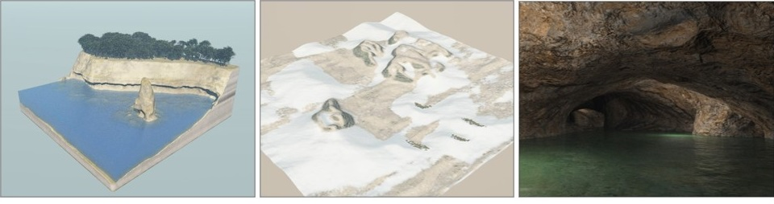

Axel Paris - Research Scientist
Home
Publications
Resume
Email
Twitter
Modeling and simulating virtual terrains
April 20, 2023

PDF
Slides
Defense
This PhD, entitled "Modeling and simulating virtual terrains" is related to digital content creation and ge-
ological simulations, in the context of virtual terrains. Real terrains exhibit landforms of different scales
(namely microscale, mesoscale, and macroscale), formed by multiple interconnected physical processes
operating at various temporal and spatial scales. On a computer, landforms are usually represented by el-
evation models, but features such as arches and caves require a volumetric representation. The increasing
needs for realism and larger worlds bring new challenges that existing techniques do not fulfill.
This thesis is organized in two parts. First, we observe that several macroscale landforms, such as
desert landscapes made of sand dunes and meandering rivers, simply cannot be modeled by existing
techniques. Thus, we develop new simulations, inspired by research in geomorphology, to generate
these landforms. We particularly focus on the plausibility of our results and user control, which is a key
requirement in Computer Graphics.
In the second part, we address the modeling and generation of volumetric landforms in virtual terrains.
Existing models are often based on voxels and have a high memory impact, which forbids their use at
a large-scale. Instead, we develop a new model based on signed distance functions for representing
volumetric landforms, such as arches, overhangs and caves with a low memory footprint. We show that
this representation is adapted to generating volumetric landforms across a range of scales (microscale,
mesoscale, and macroscale).